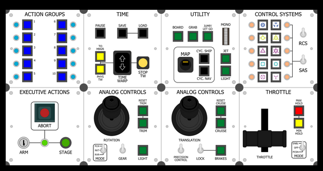

KSP Tech Tree Randomizer
Created by Codapop
The Kerbal engineers have come to a shocking conclusion: they have absolutely no idea what they are doing. So they're just going to try throwing whatever they can think of at the wall and see what sticks.
Click to download a randomized Tech Tree file.
Download
Then move the file to your KSP directory under GameData/Squad/Resources and replace the original file called TechTree.cfg. The old file must be removed entirely, not just renamed.
Warning: May break saves. Use at your own risk.
The creator of this web tool also builds Kerbal controllers. If you'd like to order one, you can find
more information here
.
